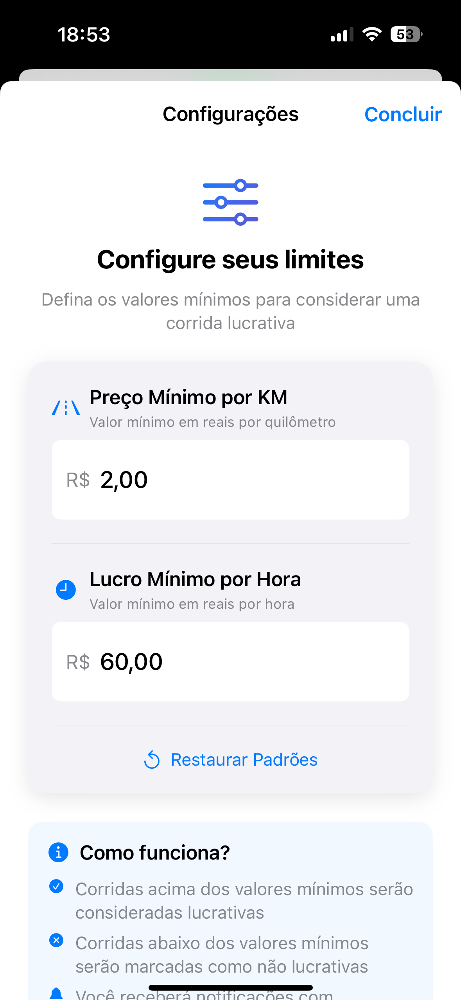
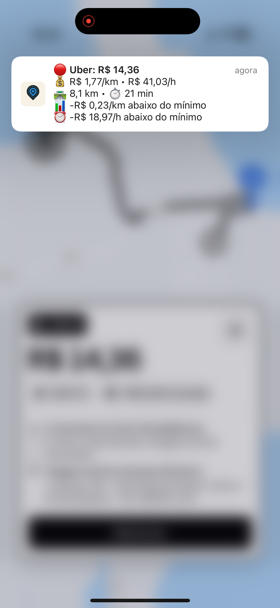

Controle total
- Define valor mínimo por km
- Ganho mínimo por hora
- Alertas personalizados
O primeiro app para iPhone que monitora suas corridas do Uber Driver e 99 Motorista. R$/km e ganho por hora em tempo real.
Grátis para iPhone

Controle total, mais lucro, sem risco — tudo no seu iPhone.
Motoristas de Uber e 99 no Brasil usam o Corridex para decidir melhor cada corrida.
"Antes aceitava corrida no achismo. Agora vejo o R$/km na hora e só aceito o que compensa."Ricardo, São Paulo
"Aumentei meu ganho por hora em uns 25%. O alerta de corrida lucrativa faz toda diferença."Mariana, Belo Horizonte
"Finalmente um app de monitoramento no iPhone. Funciona com Uber e 99, exatamente o que eu precisava."Carlos, Curitiba
Defina seu valor mínimo por km, ganho por hora desejado e quais apps monitorar. Leva menos de 1 minuto.

O Corridex usa ReplayKit para analisar ofertas do Uber Driver e 99 Motorista em tempo real, enquanto você dirige.
Quando uma corrida atende seus critérios, você recebe uma notificação com R$/km, ganho por hora e distância — antes de aceitar.

Saiba o valor por km antes de aceitar. Grátis para iPhone.
Disponível exclusivamente na App Store